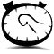
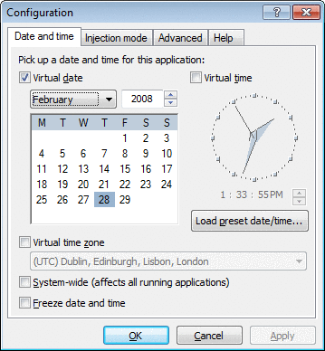

 Cracklock

Cracklock is the leader in the difficult task of fixing a bug found in an ever-increasing number of shareware programs and exploited by a polymorphic virus known as the "30th day" virus. As the name implies, this virus manifests itself once you have used the infected software for a certain period of time (usually 30 days) by preventing you from starting it! Cracklock cures those infected programs by employing cutting-edge technology that other anti-virus vendors such as McAfee, Norton, Sophos, Thunderbyte and F-Proot have yet to master.
Cracklock can be used for many other purposes. For instance many developers used it in the past to test their software for Y2K compliance. More recently, we have worked hard improving Cracklock and we are proud to announce that Cracklock can now certify your software against the Y10K bug (aka "bug of the year 10000"), allowing developers to make sure that this ever-threatening bug remains a problem of the past.
New: Cracklock now has a new feature which solves the "Microsoft Outlook timezone bug"!
Frequently Asked Questions
A Cracklock FAQ is available here.
What's new
The complete changelog is available here.
The following features have been introduced since version 3.9:
- Cracklock can now be run from a flashdisk
- It is possible to choose whether to store informations in the Windows Registry or in an INI file.
- Cracklock still (partial translation) of the following languages: french, english, spanish, arabic, serbo croatian, hungarian, korean, german, simplified chinese and portuguese.
 Documentation
Documentation
The english documentation is available here. Old version of the documentation is also available in various languages: English, Spanish, French and Arabic.
Contributing to the translation
The translation tool I once developped (RLGui) is now deprecated. Although it had nice features (for instance it can automatically reuse strings translated for version n of a program to generate translation for version n+1), it required me to do some postprocessing after each translator had finished his job.
From now on, if you want to make a new translation of Cracklock, use any resource editor available on the net (Resource Hacker, Resource Explorer or Microsoft Visual Studio) and edit one of the file in the 'Language' subdirectory of Cracklock (e.g. CLRESUS.DLL for the english version) then save it under another name (e.g. CLRESGE.DLL for german) in the same directory. After restarting Cracklock Manager, the newly created language will appear under the Language menu.